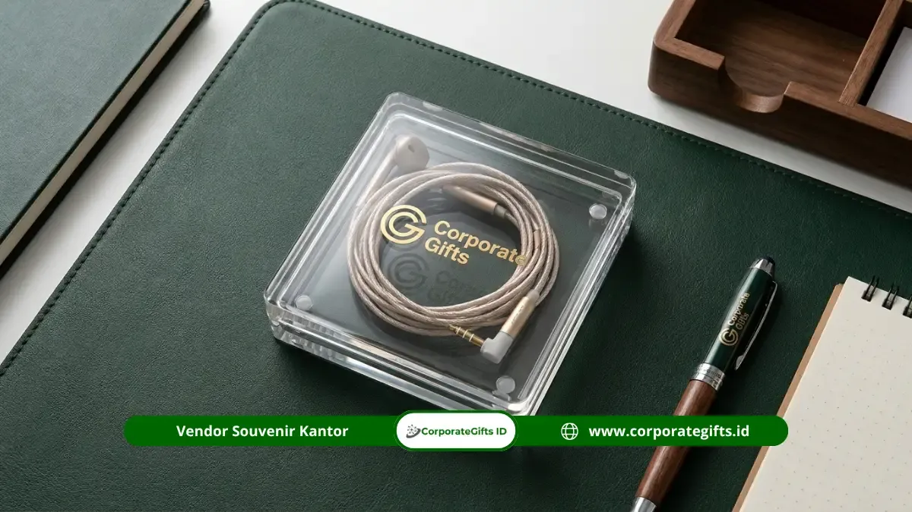

Corporate Gifts ID - Souvenir earphone custom branding untuk event dan pameran adalah perangkat audio portabel berlogo perusahaan yang dibagikan dalam volume massal sebagai giveaway bernilai fungsional tinggi sekaligus media promosi jangka panjang. Produk merchandise perusahaan berbasis gadget ini dipilih karena penerima cenderung menyimpan dan menggunakannya secara berulang dalam rutinitas kerja harian dibanding materi promosi kertas konvensional.
Poin Kunci Souvenir Earphone untuk Event:
- Retensi Pakai Jangka Panjang: Earphone disimpan dan dipakai jauh lebih lama dibanding brosur, menciptakan paparan brand berulang setiap kali digunakan.
- Opsi Varian Fleksibel: Tersedia pilihan wired earphone dengan kotak akrilik bulat berbiaya ekonomis hingga TWS bluetooth nirkabel berkesan canggih.
- Cetak UV Full Color Presisi: Teknik flatbed UV memastikan logo korporat tercetak kontras, tajam, dan tidak luntur meski sering bergesekan di dalam saku atau tas.
- Magnet Traffic Booth: Menjadi daya tarik utama bagi pengunjung pameran industri, seminar inovasi, dan konferensi teknologi untuk mampir ke stan pameran Anda.
Daya Tarik Earphone sebagai Giveaway Event dan Pameran
Dalam ajang expo atau pameran bisnis berskala nasional, puluhan hingga ratusan peserta bersaing memperebutkan atensi ribuan pengunjung. Materi promosi berupa selebaran cetak sering kali langsung berakhir di tempat sampah tanpa sempat dibaca. Sebaliknya, gadget teknologi seperti earphone langsung dipandang sebagai hadiah yang bernilai guna nyata.
Pengunjung merasa mendapatkan apresiasi yang berbobot setelah mengikuti demo produk atau mengisi survei di booth Anda. Karena earphone kerap dipakai saat bekerja di kantor, mendengarkan podcast dalam perjalanan, maupun panggilan video conference, logo perusahaan Anda akan selalu hadir di ruang personal pengguna.
Pilihan Varian Earphone untuk Distribusi Jumlah Besar
Menghadapi kebutuhan event berskala ribuan peserta, efisiensi anggaran per unit menjadi faktor penentu. Berikut dua model earphone yang paling banyak dipilih untuk pengadaan massal:
1. Wired Earphone dengan Casing Akrilik Custom
Earphone kabel jack 3.5mm atau type-C yang dikemas rapi dalam casing bulat akrilik transparan. Penutup casing akrilik menyediakan permukaan datar yang ideal untuk disablon atau dicetak UV logo perusahaan. Biaya produksinya sangat terjangkau, menjadikannya opsi sempurna untuk dibagikan hingga ribuan peserta pameran publik.
2. TWS Entry-Level dengan Charging Case Luas
True Wireless Stereo (TWS) nirkabel entry-level menawarkan kenyamanan koneksi Bluetooth tanpa kabel. Charging case berdesain kapsul atau kotak pipih memberikan area cetak logo yang sangat luas di bagian depan maupun penutup atas, menciptakan visual branding yang modern dan berkelas.

Pilihan kemasan kompak dan finishing cetak logo berkualitas tinggi menjadikan souvenir earphone siap dibagikan secara eksklusif kepada mitra dan pengunjung event.
Panduan Desain Cetak Logo UV yang High-Impact
Agar logo perusahaan terlihat mencolok dari jarak pandang pengunjung di tengah ramainya suasana expo, terapkan beberapa pedoman desain berikut:
- Gunakan Kontras Warna Tegas: Jika casing earphone berwarna putih bersih, gunakan logo dengan warna primer yang pekat. Hindari warna-warna pastel yang mudah pudar di bawah pencahayaan lampu pameran.
- Sederhanakan Elemen Visual: Area cetak pada charging case atau wadah akrilik berukuran sekitar 3 cm hingga 5 cm. Prioritaskan logo simbol dan tipografi nama merk tanpa menumpuk terlalu banyak slogan berukuran mikro.
- Pilih Teknologi Cetak UV Flatbed: Tinta UV langsung dikeringkan dengan sinar ultraviolet, menghasilkan permukaan cetak yang tahan terhadap goresan kunci, tetesan air ringan, dan minyak tangan.
Estimasi Waktu Produksi Massal dan Quality Control
Tanggal pembukaan pameran atau seminar nasional bersifat mutlak dan tidak dapat diundur. Oleh karena itu, perencanaan timeline pengadaan wajib dijalankan dengan tertib:
- Pemilihan Model & Mockup Digital (Hari 1-2): Penentuan varian unit serta approval preview tata letak logo bersama tim desainer.
- Persetujuan Sampel Fisik (Hari 3-5): Pembuatan 1 unit sampel fisik berlogo nyata untuk memastikan akurasi warna dan kualitas suara audio.
- Produksi Massal (Hari 6-12): Pencetakan mesin UV running massal dan perakitan kemasan cenderamata.
- Quality Control (Hari 13): Pengecekan fungsi baterai, pairing bluetooth, serta kerapian kemasan per unit.
- Ekspedisi & Delivery (Hari 14): Pengiriman langsung ke venue expo atau kantor panitia penyelenggara.
Komparasi Wired Earphone vs TWS Wireless
| Parameter Evaluasi | Wired Earphone (Kabel) | TWS Wireless (Bluetooth) |
|---|---|---|
| Biaya per Unit | Sangat hemat & ekonomis (Rp 15.000 - Rp 35.000) | Menengah hingga premium (Rp 65.000 - Rp 150.000) |
| Area Bidang Cetak | Tutup casing akrilik bulat diameter 4-5 cm | Bodi charging case depan & penutup atas |
| Target Kuantitas | 1.000 hingga 10.000+ unit (Distribusi massal pengunjung) | 100 hingga 1.000 unit (Peserta seminar VIP / Klien prospek) |
| Impresi Penerima | Praktis, cadangan darurat, mudah disimpan | Modern, kekinian, mencerminkan perusahaan teknologi |
Pertanyaan Seputar Souvenir Earphone (FAQ)
Kesimpulan dan Solusi Pemesanan
Souvenir earphone custom branding terbukti menjadi instrumen promosi yang sangat efektif untuk meningkatkan eksposur merk di arena pameran dan konferensi bisnis. Dengan memilih varian yang tepat sesuai profil audiens serta merencanakan produksi sejak dini, kesuksesan event promosi Anda akan tercapai secara optimal.

Ditulis oleh: Arinda Zakia
Senior Corporate Gifting SpecialistSpesialis kurasi cenderamata eksekutif dan merchandise teknologi di CorporateGifts.ID. Berpengalaman dalam merancang paket souvenir pameran high-impact, kampanye branding B2B, dan personalisasi gift set korporat modern.
Lihat Profil Lengkap & Panduan Lainnya